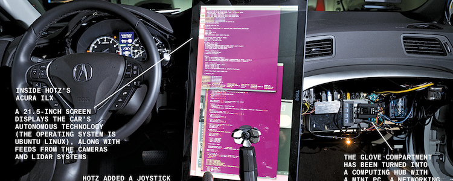

December Road Trip 2016 January 3, 2016
I'm not sure if I'm quite sure how to reflect on this year's trip yet...I haven't slept much and drove the last 5 hours last night which was draining. However, I'll attempt because it's still pretty fresh in my mind.
My friends (Tristan, Joseph, and Adam) and I left on Tuesday night to embark on a grandiose journey! We had decided we wanted to visit New Orleans, but we hadn't decided definitively all of the different cities we would stop in. Despite our indecision, we left in our minivan and headed for New Orleans. On the way, we decided we should first stop in Louisville, Kentucky. We arrived in Louisville at 3:00am, so we didn't get to see a ton of things (namely, people that were awake). We walked around and stopped at the Louisville Slugger Museum and factory downtown. We also checked out all of the beautiful decorations they had out and the amazing view of the Ohio River. However, because it was 3:00am we left without doing much. We DID pass the Churchill Downs, which I thought was pretty cool. Our next stop was Nashville, Tennessee. Nashville, in my opinion, was the biggest letdown of the entire trip. We parked on Vanderbilt's campus at ~6:00am, and we decided to grab some breakfast. It was pretty good (shoutout to the Pancake Pantry). After breakfast, on minimal sleep, we headed into town—they were setting up for a New Year's Eve concert, so it was pretty busy at 8:00am (or whenever we arrived). We immediately started looking for little shops to stop in...but there were very few. Those that were there were closed for New Years or didn't open until later. So, we loitered a little and grabbed a little bit to eat. Ultimately, we got bored and went back to the car to sleep (yes, we all slept in the car the whole week). After our little nap, we made our way to New Orleans, Louisiana.
New Orleans was incredible. We were there for New Year's, so it was a little crazy, but I thought it was the best location of the trip. There was tons to do in New Orleans (and we aren't even 21). There were shops galore, plenty of people to talk to, and architecture in the French Quarter to admire. It was a lovely destination. Furthermore, all sorts of interesting things happened to us in New Orleans. A random blazed fellow told my friend that he looked like he had AIDS...that was interesting. We had a waiter who told us his name...probably 8 times in one sitting. My friend also probably had 10 New Year's kisses...but maybe that's just him. We counted down the New Year and made our way to Atlanta, Georgia the next day.
Atlanta was fun, but not nearly as much fun as New Orleans. We spent a day there but then decided we should head home. So, after 10 hours of driving, numerous bathroom/food stops, and plenty of replays of "Come on Eileen" and "500 Miles", I am home and drinking coffee. Great trip. Great memories. Awesome friends. Can't wait until next year!
Who Are They REALLY Representing? December 30, 2015

Well, I finished v0.1.1 of my first Chrome extension. Called Congresstributions (sort of a bastardization of Congress and Contributions if you didn't catch that), this extension adds a Congressperson's largest contributor after their name on any webpage. My next step is to make this prettier because I'm all about design, but right now I'm pretty happy with its primitive version for the time being. I'd highly suggest downloading it if you're into politics at all.
COMPLETELY UNRELATED, I'm leaving to go on a road trip tonight with friends from high school, so there's a good chance I won't post anything for a week or so. After that I'll be interning with CodeMash, so again, I probably won't be super present. But the week after I'll be home alone for a week (almost all universities go back a week earlier than mine), so I'll be up to no good working on projects then!
HP: I Love His Articles December 28, 2015

So, he doesn't know I'm doing this, and I probably won't tell him, but I've read his posts and I think other people need to as well. There's this new "Buzzfeed-esque" blogging platform floating around called "Odyssey". I kind of hate it because it's all that shows up on my social media anymore, but I love reading some really insightful people's thoughts (and hate poorly written trash posts...so there's that). One of my favorite posts are by my good friend, Ryan Erickson. Ryan writes about a multitude of subject-areas and his articles always keep me entertained. So, if by some chance you're reading my blog and not his (which would be weird because I don't advertise mine or anything...), I HIGHLY SUGGEST YOU READ HIS ARTICLES. I'm proud to call him my fraternity Brother!
The Best Christmas Ever December 27, 2015
Quick little update here...since as long as I can remember my family has watched one movie EVERY Christmas: The Best Christmas Ever. This wonderful Wee-Sing movie has tons of catchy songs, elves that have names that are too similar to drugs, and so much 90s clothing that it makes me sick. I don't consider myself a very Christmas-y person—it's definitely not my favorite holiday (especially with all of the commercialization). However, this movie brings out all of the great parts and that little tap of nostalgia that makes me feel like a boy again. I would really recommend this movie to anyone looking for a Christmas classic. It's bound to become one of your favorites!
One Year of Photography! December 25, 2015
A year ago today I took my first picture with my Canon T5...an ambitious beginning to photography. The picture above is one of the first photos I took with my camera. Pictured is a neighborhood stray cat named "Tiddle" that my family allows to live in our garage (now our breezeway too!). I've learned a great deal in my one year as an amateur photographer. Photography is a great creative outlet, and I have actually made it constructive by earning a few awards in my county fair! I hope to continue on with my newest hobby for years to come—I'm not the best so it's great to see my progress as time goes on.
Deep Learning Car December 22, 2015
Really interesting perspective on how to get a self-driving car to work. Instead of teaching it how to drive, let it teach itself by watching you. While I'm not a fan of George Hotz's attitude, I think he's absolutely brilliant and this could be a great approach to a problem companies have been trying to tackle for a while.
Star Wars Social Networks December 21, 2015

I thought this was a really cool data science project. In light of all of the Star Wars hype, here are all of the relationships between ALL characters analyzed in the first six movies. Evelina Gabasova did a great job. The creator first had to parse all of the scripts and get them into the correct format (which is ridiculously annoying), and then they used R to run statistical analysis and JavaScript to visually represent it. The end result is freaking cool and interesting to read about. I knew Obi-Wan was the best the whole time. I hope to do something like this in the future.
Mufasa Explains C++ To Simba December 19, 2015
I never needed anything to solidify the fact that I'm a nerd, but if I did this would be it. I found ridiculous amounts of joy in listening to Mufasa tell Simba about C++ as The Circle of Life majestically plays in the background. "All the code you write exists in a delicate balance. As a programmer, you need to respect that balance." The life lessons from The Lion King seem to extend far beyond that of the actual movie.
The Fallen of WWII December 10, 2015
I feel this is better watched than explained. The first semester of my college experience I took a course with Brenda Boyle called "The Languages of War". This class was one of my favorites at Denison. We discussed war narratives and how patriotism is framed to call us to war and war is an act humans engage in simply to give ourselves meaning. The RIDICULOUS amounts of death that occurred in WWII should be avoided at all costs in the future. No issue should be so pressing to lose millions of lives in armed conflict. This video is humbling and thought-provoking.